Tohokumachi
Tohokumachi · Aomori
Tohokumachi
Highlighted on the Aomori map.
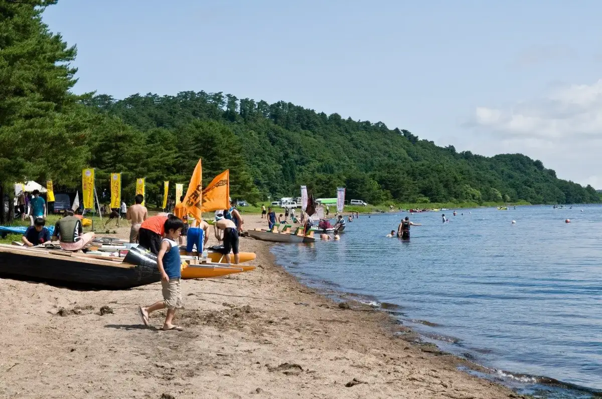
Stay
モール温泉と炭酸泉の湯 上北さくら温泉
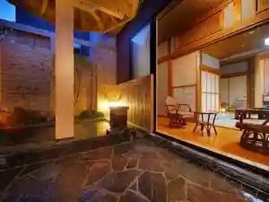
Mooru Onsen To Tansan Izumi No Yu Kamikita Sakura Onsen
温泉旅館 松園
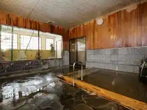
Onsenryokan Shouen
温泉旅館水明
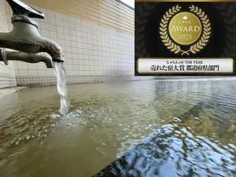
Onsenryokan Suimei
Dining
なみ木
Nami Ki
磯げん
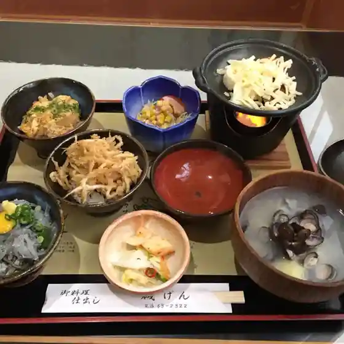
Iso Gen
想い出寿司
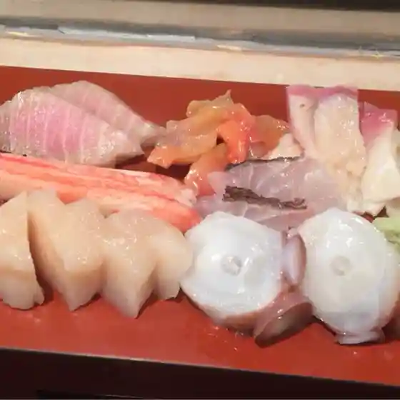
Omoide Sushi
LUSH flower cafe
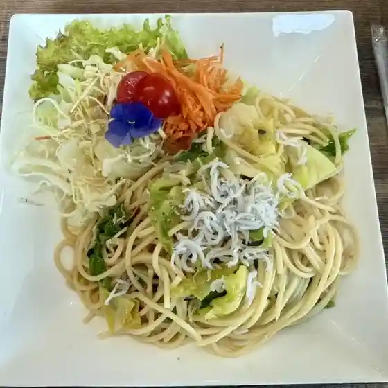
Lush Flower Cafe
あかね
Akane
すし処 割烹おがた
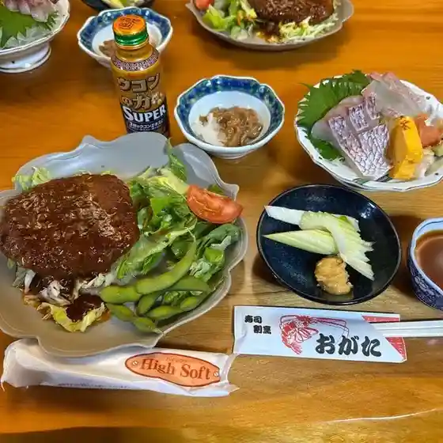
Sushi Tokoro Kappou Ogata
進藤水産
Shindou Suisan
チャイニーズゲート神龍
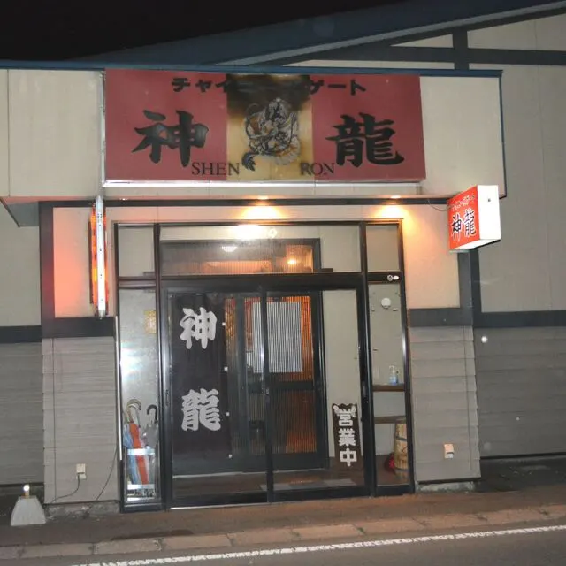
Chainiizugeeto Shinryuu
源泉かけ流し・温泉旅館 松園
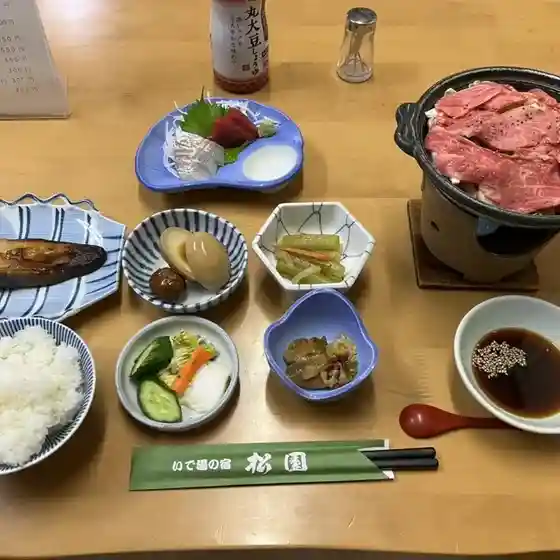
Gensen Kake Nagashi Onsenryokan Shouen
麺家だいち
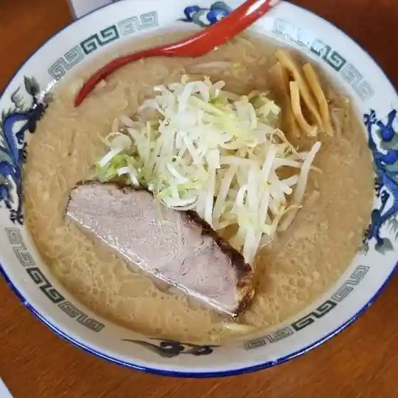
Men Ie Daichi
富士・居食処
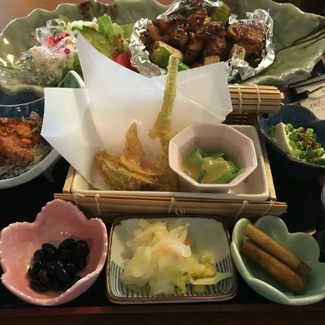
Fuji Kyo Shoku Tokoro
蔵BASE Mog庵
Kura Base Mog Iori
東北牧場
Touhoku Bokujou
道の駅 おがわら湖 湖遊館
Michi No Eki Ogawara Mizuumi Mizuumi Yuu Kan
粋や
Sui Ya
LAWSON 東北町上北北二丁目店
Lawson Touhoku Machi Kamikita Kita Nichoume Mise
和幸
Kazuyuki
四季旬菜Kin一
Shiki Jun Na Kin Ichi
フランセ大湊屋
Furanse Oominato Ya
居酒屋れすとらん えび蔵
Izakaya Resutoran Ebi Kura
高村ストア
Takamura Sutoa
温泉旅館 水明
Onsenryokan Suimei
居酒屋遊山海
Izakaya Yuuzan Umi
一楽寿司
Ichi Rakuju Tsukasa
Sights
Lake Ogawara
Aomori's largest lake and Japan's 11th largest, 63.2 km² in area.
Roadside Station Ogawarako Koyukan
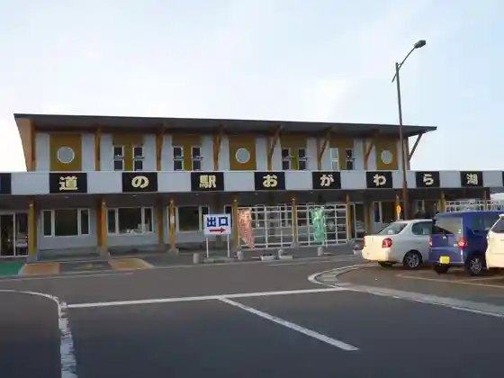
Roadside station opened in 2004 selling Lake Ogawara clams, icefish and smelt.
Wakasagi Park Hamadai Campground
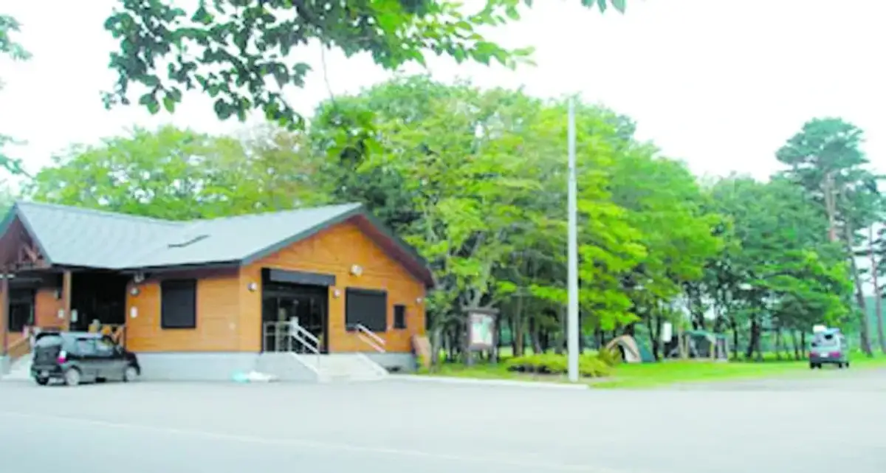
Lakeside campground on Lake Ogawara with a swimming area and auto-camp sites.
Ogawarako Fureai Village
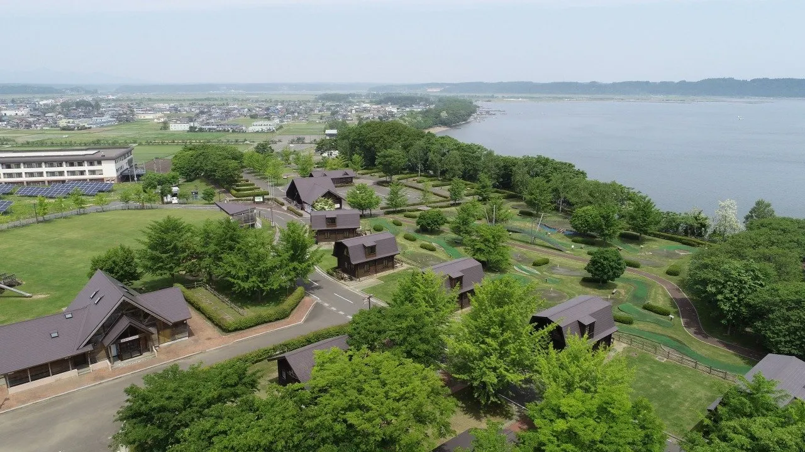
Recreation area in Ogawarako Park with campsites, cabins, an observatory and putting golf.
Kamikita Sakura Onsen
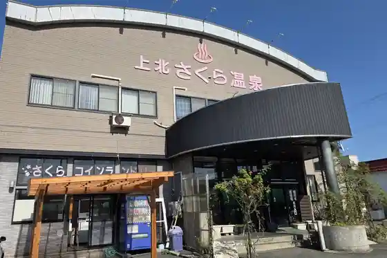
Moor hot spring with a spacious bath and popular carbonated bath.
Tohoku Onsen
Free-flowing plant-based moor hot spring said to be Japan's blackest.
Shimizume Dam Auto Campground
Quiet valley campground in Shimizume Dam Park.